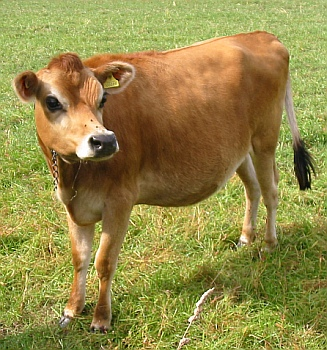

à Portinfé,
Saint Ou.
Moussieu l'Editeu,
"Oh, grand doue d'la vie!" s'fit la Merrienne hier au sé, quand, en r'venant du "show" d'bêtes à Saint Sauveux, j'la trouvis êtrav'lée sûs l'sofa. "J'n'en peux pûs, man Ph'lip, et j'qu'menche à craithe que quand une femme veint à une certaine âge, oulle est bête s'ou crait qu'ou peut faithe lé travas qu'ou n'avait jamais yeu d'peine à faithe. Pûs de r'pos et pas tant de travas - né v'là la solûtion du problème. Fais-mé une tâsse de tais, comme un bouon homme, et dis-mé tchèsque tu'as veu au 'show' agniet."
"Et bein, ma vielle," j'li dis, quand oulle avait bu sa preumié tâsse, "j'en ai veu de pûs d'une sorte. À qu'menchi y'avais pûs de grandes gens que j'n'avais jamais veu, épis la clâsse de jeunes vaques à Saint Sauveux était yunne des bouonnes que j'aie jamais veu dans autchune pâraisse."
"Les grandes gens?", ou d'mandit, "dis-mé tchèsque ils 'taient."
"Y'en avait tant," j'li dis, "que je n'peux pas me rappeler de tous. Mais, à qu'menchi, y'avait mé. Y'avait étout l'Evêque de Southampton (nou dîsait 'Hamptonne' aut'fais) et y'avait la Dame de Samathès, le Lord Jersey, lé Connêtablye d'Saint Cliément, lé Recteur d'Saint Sauveux, et bein d'autres. I' n'faut pas oublier la Eileen Le Sueur, une vraie Saint Ouennaise chette-là. Ou' 'tait habillyie comme une reine, et nou-s-éthait peut la vaie un demié mille au lien. Lé Connêtablye d'Saint Sauveux, man vièr amîn, le Tom Mouothant, 'tait là pour r'chever les gens, et l'fit admithablyement. Lé temps 'tait bé, et crais-lé s'tu veur, Merrienne, j'tais si intérêssi que je n'crouâisis pas la route pour aver une fais à béthe. Ch'est la preumié fais que chonna m'est arrivé pour pûs de chînquante ans."
"Tu'as pâslé des jeune vaques à Saint Sauveux," ou r'mertchit. "Y'avait-i' tchiquechose de spécial?"

"Y'en avait au mains deux," j'lî raîponnis, "que nou-s-est seux de r'vaie au 'show' d'l'Ile. À qu'menchi y'avait la vaque à Eugène Perrédès, épis étout la sienne au Ken Richardson, tch'était membre du jury ès Assises. Il éthait peut s'faithe récusé, mais sans doute i' criyait que la cause finithait lundi. J'garantis que quand vint l'arlévée dé mardi, il éthait donné tchiquechose pour être au 'show'."
"Et tchèsqu'i' la montrit>" ou d'mandit.
"Sa femme," j'li dis," et ou fit raide bein, mais i' s'peut que si s'n homme avait ;té là il éthait fait tchique difféthence, car pour montrer une bête dans l' 'ring' i' n'y a personne à battre le Ken et ses frèthes."
"I' n'y avait qu'un juge et un 'referee' dans toutes les clâsses," j'continuis, "et j'si pas certain que j'approuve de chu système-là. enfin, quant ès deux vaques, la sienne à Eugène avait un piéchot parfait, tout plien de bathi, et la seule chose ch'tait qu'ou pathaissait un mio sans esprit en compathaison avec l'autre. La vaque de la Crouaix ès Mottes avait étout un bouon piéchot, mais pas si parfait comme l'autre; étout ou n'avait pas le bathi d'la sienne à Eugène. Mais, comme toutes les vaques de chutte famille-là, oulle avait un air de distînction, ou 'tait pûs âne, et oulle avait la qualité que l'autre mantchait un mio. En Ville les juges éthont une difficile djobbe, et i' n'faut pas oublier que y'a pûs d'une raide bouonne vaque dans d'autres pâraisses. si l'temps s'comporte à Springfield i' n'dév'thait pas y'aver une seule faillyie clâsse dans tout l' 'show'. Mais j'crais que l'championnait chutte fais îtha à une jeune vaque, et que l'Est en remportétha sûs l'Ouest. J'dis chonna sachant que j'pouôrrais m'tromper."
"Pas pour la preumié fais, man Ph'lip!" ou dit, "mais j'espèthe d'être là étout si y'a moyen. Les fermiers ne sont pas ocquo à dêfouï sinon ichîn et là, et, ocquo si l'temps s'comporte, nou vêrra pûs d'experts lé tou du 'ring' pour dithe aux juges tch'i' n'savent pas lûs travas."
À ch'teu, Moussieu, laissant les bêtes et les "shows" de côté, tchèsque j'ai à vos dithe de chein tchi s'est pâssé autrement dans l'Ile chais jours? Sans doute la grande occasion ch'tait l'commémoration du jour d'la Libéthâtion, mais je n'm'en vais pas prétendre que pour la Merrienne et mé il avait autchune grande signification. Ch'n'est pas, pour nous, une bein joyeuse occasion, car j'avons tréjous voulu que j'pouôrraîmes oublier chais chînq tristes années quand j'tiomes souos la dominâtion de chais fichus Allemands. Y'en a tchi dîsent, et ch'est assez vrai, que sinon pour les derniés siez mais je n'pouvions pas nos pliaindre. Mais quand vînt sûs la fîn, et que les soudards de nos ennemis entraient dans les maîsons de niet, et qu'nou n'ôsait pas d'valler pour les arrêter, quand vînt la rumeur que les simplyes soudards s'n allaient tither lûs officiers et otchuper les maisons, nou n'pouvait pas sinon être remplies d'peur de chein tchi pouôrrait s'arriver. Nou-s-avait tréjous dans l'idée qué y'éthait une forte résistance si l'Angliétêrre tâchait de r'prendre notre Ile, et que y'éthait un massacre des habitants. J'vos dis, Moussieu, que chais jours-là n'peuvent pas être oubliés par des gens d'notre âge. Enfîn, comme dit la Merrienne, i' faut être bein r'connaissant à la Providence que quand vînt la fîn l's Allemands n'fîtent autchun êffort pour se d'fendre et que Jêrri fut r'prînt sans autchuns des malheurs que nou-s-appréhendait.
À ch'teu, Moussieu, pour nos patates. Chein tch'ils ont fait dans les derniés djais jours est r'merquablye, mais si j'pouvais mettre la main sûs lé fripon tchi vînt dans la niet fouôilli dans ma bordeuse, i' s'en r'pentithait. I' hallit une bouonne doûzaine de vignes, et fichit san camp avec chein tch'i' trouvit d'sous. Oh, Moussieu, si j'avais peut être drièthe li avec ma chouque. I' lûs faut ocquo un bouon tchînze jours à mes patates, mais dans l'entretemps j'm'en vais en accater assez pour me donner un bouan fricot, et, bein seux, la Merrienne étout. Avec chonna, Moussieu, j'n'ai pas idée de péyi des chînq ch'lîns la livre, et j'm'attends d'les vaie à bein miyeu marchi bein vite. J'espèthe vos en envier assez pour vous et votre bouonnefemme quand ma bordeuse s'sa bouonne à fouï.
Pour en fini, j'ai idée d'aller en Ville samedi pour saver tchèsqu'en est des êlections qu'nou-s-attend. Y'a toutes sortes dé rumeurs par les qu'mîns, mais rein de certain. Quand-même, j'espèthe que j'éthons une chance, la Merrienne et mé, d'aller présentement voter pour un Sénateur. Tchèsque nou gâgne d'aver une vouaix si nou n'peut pas s'en faithe servi?
Ph'lip
12/5/1962
Viyiz étout: